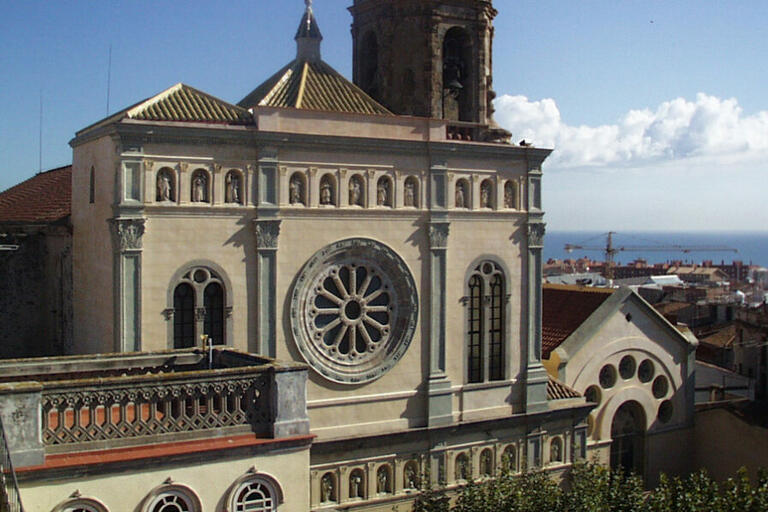

Visita · Mataró
És l'església més emblemàtica de Mataró. Està situada a la plaça de Santa Maria, al bell mig del nucli històric, sobre les restes d'una església romànica, i encara abans, d'un temple d'origen…